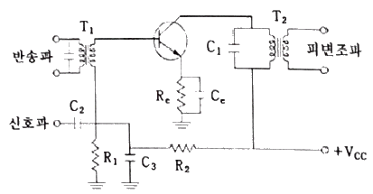
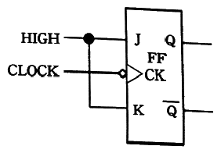
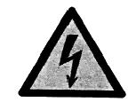
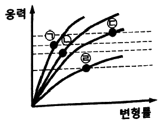
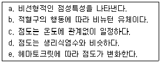

의공기사 (2018-09-15 기출문제)
1과목: 기초의학 및 의공학
1. 압력 센서는 압력 이외의 물리량의 변화에는 최소한으로 반응해야 한다. 이와 같이 센서가 측정하고자 하는 물리량에만 반응하는 특성은?
- 민감도
- 선택도
- 동작범위
- 오차
(정답률: 69%)

2. 미세 전극(micro-electrode)에 관한 설명으로 옳은 것은?
- 인체 내에 이식해서 사용된다.
- 세포막 양측의 전위차를 측정하는 용도로 사용된다.
- 피부 표면에 부착해서 사용한다.
- 바늘 형태로 피부에 찔러서 사용한다.
(정답률: 67%)
3. 세포막의 물질 이동 중 ATP(adenosine triphosphate)로부터 에너지 공급이 필요한 기전은?
- Ca2+ 펌프
- 삼투
- 확산
- 여과
(정답률: 78%)
4. 어떤 물질에 어떤 방향으로 압축 또는 인장력을 가했을 때, 전기 분극이 일어나고 대응되는 단면에 분극전하가 나타나는 현상은?
- 압전 효과
- 콤프턴 효과
- 광전 효과
- 펠티에 효과
(정답률: 84%)
5. 인체에 삽입하는 바늘형 전극(needle electrode)의 재질로 부적합한 것은?
- 금(Au)
- 백금(Pt)
- 아연(Zn)
- 스테인리스 강
(정답률: 78%)
6. 용량성 센서에 대한 설명으로 옳은 것은?
- 변위를 측정할 수 있다.
- 접합 반도체의 특성을 이용한다.
- 물리적 압력이 가해지면 전압이 발생한다.
- 온도에 따라 저항이 변화하는 특성을 이용한다.
(정답률: 82%)
7. 신경섬유에서 흥분전도의 특성에 관한 설명 중 틀린 것은?
- 양 방향으로 전도 가능하다.
- 활동전위의 진폭이 일정하다.
- 섬유가 굵을수록 전도속도가 빠르다.
- 활동전위의 빈도가 일정하다.
(정답률: 60%)
8. 신경전달물질의 기전에 대한 설명으로 틀린 것은?
- 시냅스 전 뉴런에 존재하고 시냅스 후 뉴런이나 효과기에 작용을 나타내야 한다.
- 시냅스 전 뉴런에서 합성되어야 한다.
- 시냅스 후 뉴런 내부에서 신경전달물질이 제거된다.
- 외부에서 동일한 물질을 투여하면 원래의 신경전달물질과 동일한 효과를 나타내야 한다.
(정답률: 77%)
9. 혈압과 혈류에 대한 설명으로 옳은 것은?
- 혈관 저항이 높을수록 혈류량이 감소한다.
- 혈류량이 일정할 때 혈관계의 총 말초저항이 작을수록 혈압이 높아진다.
- 평상시 총 혈액량이 80%는 동맥에 있다.
- 이완기 혈압(diastolic blood pressure)이 수축기 혈압(sysstolic blood pressure) 보다 높다.
(정답률: 73%)
10. 혈관의 직경을 조절하는 물질 중 모든 혈관을 수축시키며 특히 말초혈관에 대하여 강한 수축작용을 하는 물질은?
- 히스타민
- 브라디키닌
- 노르에피네프린
- 아세틸콜린
(정답률: 75%)
11. 생체표면전극에 대한 설명으로 틀린 것은?
- 오랫동안 안정적으로 체표면과의 접촉을 유지하여야 한다.
- 접촉저항은 면적에 비례하기 때문에, 실제 표면에 접촉하는 면적을 줄여야 한다.
- 전극의 금속에서 발생하는 분극전압이 작아야 한다.
- 피부와의 임피던스를 낮추기 위하여 페이스트(paste)를 사용한다.
(정답률: 73%)
12. 금속저항 온도계를 이용한 온도측정 회로에서 센서에 큰 전류가 흐르도록 설계해서는 안 되는 이유는?
- 제작상의 어려움 때문
- 회로 구성의 어려움 때문
- 온도센서의 부식 때문
- 소자의 온도 상승 때문
(정답률: 88%)
13. 뇌자도(MEG) 또는 심자도(MCG)에 관한 설명 중 틀린 것은?
- 심장이나 뇌에서 발생하는 미세한 전류 변화를 측정하기 위하여 전류가 흐를 때 발생하는 자기장을 측정한다.
- 초전도체를 조셉슨 링의 형태로 만들면 자기장에 의해 유도된 전류를 조셉슨 소자에서 큰 폭의 전압 신호로 바꿀 수 있다.
- 전자가 가진 터널효과로 인해 매우 작은 전류가 흐를 때는 조셉슨 소자 사이에 전압 신호가 나타나지 않는다.
- 조셉슨 소자는 전자를 매우 잘 통과하는 도체만으로 이루어져 있다.
(정답률: 65%)
14. 뼈의 분류와 관련하여 편평골에 속하는 것은?
- 두개골
- 척추
- 하악골
- 상완골
(정답률: 75%)
15. 유수신경섬유에서 활동전위의 도약전도 과정에서 세포외부의 Na+이 신경섬유 내부로 들어가는 경로가 있는 분위는?
- 세포체(cell body)
- 수상돌기(dendrite)
- 랑비에결절(node of Ranvier)
- 미엘린초(myelin sheath)
(정답률: 74%)
16. 심전도(ECG) 파형에 대한 설명으로 틀린 것은?
- P파 : 심방의 탈분극
- PR간격 : P파의 시작에서 다음 P파 시작까지의 시간
- RR간격 : R파의 시작에서 다음 R파 시작까지의 시간
- T파 : 심실의 재분극
(정답률: 81%)
17. 다음 중 생체전위를 측정하는데 사용할 수 없는 전극은?
- 금속판 전극
- Ag-AgCl 전극
- 백금 바늘전극
- 수소 전극
(정답률: 77%)
18. 감도가 5μV/g 인 변화기로 120g의 질량을 측정하였을 때, 출력전압은 몇 mV인가?
- 0.06
- 0.24
- 0.60
- 2.40
(정답률: 63%)
19. 다음 중 의미있는 센서 출력을 발생시키는 최대 입력과 최소 입력 사이의 범위를 의미하는 용어는?
- 동작범위(dynamic range)
- 감도(sensitivity)
- 전달함수(transfer function)
- 교정(calibration)
(정답률: 79%)
20. 생체전기현상을 측정하기 위한 생체 표면에 전극에 관한 설명 중 틀린 것은?
- 체포면 전극의 경우, 계측 상태의 임피던스 전극, 피부 및 내부 조직의 임피던스에 의하여 결정된다.
- 신경세포와 근육세포의 활동에 따라 세포 안팎으로 이온에 의한 전기의 흐름이 발생한다.
- 몸을 덮고 있는 피부는 일반적으로 전기를 잘 통과시키는 성질이 있다.
- 피부 임피던스는 일반적으로 RC 병렬회로로 표기되는데, 저주파 영역에서는 전극 접촉 임피던스는 주파수에 반비례한다.
(정답률: 71%)
2과목: 의용전자공학
21. 전위차계(potentiometer)와 스테레인 게이지(strain gauge) 변환기의 공통적인 원리는?
- 저항성
- 유도성
- 온도성
- 용량성
(정답률: 70%)
22. 양 방향으로 변화하는 교류전류를 한 방향으로만 변화하는 직류전류로 변환시키는 회로는?
- 비교기
- 정류기
- 미분기
- 적분기
(정답률: 76%)
23. 10진수 8을 2진수, 1의 보수, 2의 보수의 순서로 변환한 것은?
- 8 → 1000 → 1001 → 0110
- 8 → 0101 → 1000 → 0111
- 8 → 1001 → 0111 → 0111
- 8 → 1000 → 0111 → 1000
(정답률: 77%)
24. 생체계측기기의 성능을 정량적으로 나타내기 위한 정적 특성에 해당되는 물리량이 아닌 것은?
- 정확도
- 정밀도
- 해상도
- 정량도
(정답률: 66%)
25. 1초에 4~8회의 진동이 나타나고 성인보다 어린이에게서 많이 나타나는 뇌파는?
- 델타(δ)파
- 세타(θ)파
- 알파(α)파
- 베타(β)파
(정답률: 63%)
26. 전파(電波)의 전파(傳播)특성에 대한 설명으로 틀린 것은?
- 전파는 파장이 길수록 빛의 성질에 가깝게 된다.
- 전파의 직진성은 VHF나 UHF 보다 SHF 쪽이 강하다.
- 안테나의 효율을 높이려면 안테나 금속의 길이를 파장의 0.5배로 해야 한다.
- 안테나의 길이와 전파의 파장과는 많은 관계가 있다.
(정답률: 64%)
27. B급 푸시풀(push-pull) 증폭회로의 특징으로 틀린 것은?
- 전원 효율이 좋다.
- 컬렉터 손실을 2개의 트랜지스터로 분산할 수 있으므로 큰 출력을 얻을 수가 있다.
- 신호가 없을 때는 콜렉터 전류가 흐르지 않는다.
- 교차 일그러짐이 전혀 생기지 않는다.
(정답률: 77%)
28. 그림과 같이 이미터가 바이패스 되고 입력 측 베이스에 반송파와 신호파를 주입하는 회로를 이용한 변조회로는?

- 베이스 변조회로
- 컬렉터 변조회로
- 이미터 변조회로
- 평형 변조회로
(정답률: 63%)
29. 발진기에 동기가 걸리기 위한 동기신호의 조건으로 옳은 것은?
- 동기신호의 주파수가 발진 주파수보다 높아야 한다.
- 동기신호의 주파수와 발진 주파수가 같아야 한다.
- 동기신호의 주파수가 발진 주파수보다 낮아야 한다.
- 동기신호의 주파수는 발진 주파수와는 상관이 없다.
(정답률: 72%)
30. 지름 1.6mm 인 동선의 최대 허용전류가 25 A일 때, 최대 허용전류에 대한 왕복 전선로의 길이 20m의 대한 전압 강하는 약 몇 V 인가? (단, 동의 저항률은 1.69×10-8[Ω·m]이다.)
- 0.7
- 2.1
- 4.2
- 6.3
(정답률: 51%)
31. 점성이 있는 액체가 어떤 관 속을 흐를 때 단위시간동안 흐르는 약체량(F)과 관 양쪽의 압력차(△P), 관 내경(r), 관 길이(ℓ) 및 액체의 점성(η)과의 관계를 설명한 것으로 맞는 것은?
- 비례 : △P, r4, 반비례 : ℓ, η
- 비례 : ℓ, η, 반비례 : △P, r4
- 비례 : △P, ℓ, 반비례 : r2, η
- 비례 : r2,η, 반비례 : △P, ℓ
(정답률: 70%)
32. 인체의 호흡기류를 측정할 수 있는 적절한 방법으로 가장 적절하지 않은 것은?
- 발열선에서 손실되는 열량의 측정
- 유체 저항 양단간의 압력차를 측정
- 호기 시 발생하는 체중의 변화를 측정
- 바람개비의 회전 속도를 측정
(정답률: 67%)
33. 전파브리지 정류기에서 다이오드 하나가 개방되었을 경우 출력의 상태로 옳은 것은?
- 반파정류
- 입력전압의 0.5배 크기
- 120Hz의 리플 전압
- 0V
(정답률: 74%)
34. 디지털 신호처리의 특징으로 가장 적절하지 않은 것은?
- 유한개의 샘플을 채취하여 수치화 된 데이터들은 전송과 조작이 용이하다.
- 데이터 전송 신뢰도가 높고 전송속도가 매우 빠르다.
- 완벽한 신호의 복조가 불가능하므로 정보의 손실이 크다.
- 독립적인 데이터 조작이 가능하다.
(정답률: 75%)
35. 마이크로프로세서의 중앙처리장치(CPU)에 속하지 않는 것은?
- 명령레지스터(IR : Instruction register)
- 플래그레지스터(flag register)
- 프로그램 카운터(PC)
- 아날로그-디지털 변환기(ADC)
(정답률: 74%)
36. 효율이 가장 좋고, 고주파 동조 전력증폭에 많이 용되는 증폭기의 형태는?
- A급 증폭기
- B급 증폭기
- AB급 증폭기
- C급 증폭기
(정답률: 70%)
37. 무부하시의 직류 출력전압이 250V이고, 전부하시는 225V일 경우 전압변동률은?
- 10.2%
- 11.1%
- 15.2%
- 18.0%
(정답률: 65%)
38. JK 플립플롭의 J와 K의 입력 모두를 그림과 같이 High에 결선했을 때, 어떠한 플립플롭과 같은 동작을 하는가?

- T 플립플롭
- D 플립플롭
- RS 플립플롭
- 클록 RS 플립플롭
(정답률: 60%)
39. 10 V, 60 Hz 교류전원에 Xc=-j2.5Ω인 C와 XL=+j2.5Ω인 L의 병렬회로를 연결하였을 때, LC 병렬회로에 공급되는 전류는?
- 0 A
- 2 A
- 4 A
- 8 A
(정답률: 56%)
40. 4분 동안에 480J의 일을 하였다면 소비전력은 몇 W 인가?
- 2
- 4
- 6
- 8
(정답률: 82%)
3과목: 의료안전·법규 및 정보
41. 다음 중 전리방사선(Ionization Radiation)에 해당하는 것은?
- 초단파
- 가시광선
- 자외선
- 감마선
(정답률: 74%)
42. 다음 중 의료폐기물 종류별 전용용기에 표시하는 도형의 색상이 바르게 연결된 것은?
- 인체조직물 중 태반(재활용하는 경우) - 파란색
- 격리의료폐기물 - 검은색
- 위해의료폐기물 - 노란색
- 일반의료폐기물 – 붉은색
(정답률: 65%)
43. 다음 중 정보보안의 속성이 아닌 것은?
- 가용성
- 무결성
- 비밀성
- 광대역성
(정답률: 71%)
44. 제조허가를 하거나 제조신고를 받은 의료기기 중 안전성 및 유효성에 대하여 재검토가 필요하다고 인정되는 의료기기에 대하여 재평가를 할 수 있고, 재평가 결과에 따라 필요한 조치를 할 수 있는 사람은?
- 식품의약품안전처장
- 보건복지부장관
- 산업통상자원부장관
- 대통령
(정답률: 78%)
45. 다음 중 의무기록 전산화의 효과로 틀린 것은?
- 환자 재원기간의 단축
- 데이터에 대한 접근성 향상
- 자료의 공유 및 의사소통량 증가
- 비용절감의 효과
(정답률: 71%)
46. 다음 중 의료기기법에 따른 의료기기 등급분류 기준에서 '고도의 위해성을 가진 의료기기'의 등급은?
- 1등급
- 2등급
- 3등급
- 4등급
(정답률: 76%)
47. 멸균은 “미생물에 물리·화학적 자극을 가하여 완전히 사멸 제거하는 것”으로, 다음 중 쉽고 빠르지만 테프론 재질에 맞지 않는 멸균 방법은?
- 스팀 멸균
- 감마 멸균
- 전자빔 멸균
- 산화에틸렌 멸균
(정답률: 68%)
48. 전자기파가 인체에 가하는 작용으로 가장 거리가 먼 것은?
- 전류밀도에 따른 열작용
- 세포의 기체교환을 유발하는 호흡작용
- 자기장의 누적 효과에 의한 비열작용
- 신경과 근육의 활동전위를 발생시키는 자극작용
(정답률: 71%)
49. 10분 이상 환자에 접촉하고 있는 장착부를 위한 표면 온도제한에서 제조자는 장착부의 표면온도가 섭씨 몇 도(℃)를 초과할 경우 부속문서에 그 사실을 기재하게 되어 있는가?
- 41℃
- 43℃
- 45℃
- 47℃
(정답률: 73%)
50. 의료기기의 온도측정에 관한 내용 중 틀린 것은?
- 시험 중에는 열감지차단기를 정지시키지 않는다.
- 장치 또는 센서가 시험 중인 부분의 온도에 영향을 미치지 않도록 선택하고, 배치하여 측정한다.
- 권선 절연물 이외의 전기 절연물의 온도는 고장이 단락, 보호수단의 브릿지 또는 절연물 타입에서 규정한 값 미만으로 공간거리의 감소를 발생시킬 경우, 절연물의 표면에서 결정한다.
- 온도측정 시험시작 시 권선은 실온보다 낮아야 한다.
(정답률: 65%)
51. 정상 상태에서 환자환경내 의료기기 시스템의 부분틀 또는 부분틀 사이에서의 접촉전로는 얼마 이하이어야 하는가?
- 10 μA
- 50 μA
- 100 μA
- 500 μA
(정답률: 52%)
52. 스팀(steam) 대신 가스를 이용하여 바이러스 및 기타 미생물을 사멸시키는 화학적 소독방법은?
- 고압스팀 멸균법
- EOG 멸균법
- 감마선 멸균법
- 저온플라즈마 멸균법
(정답률: 70%)
53. 의료기기의 용기나 외장(外裝)에 기록하지 않아도 되는 것은?
- 제조업자 또는 수입업자의 상호와 주소
- 허가(인증 또는 신고)번호, 명칭(제품명, 품목명, 모델명). 이 경우 제품명은 제품며이 있는 경우만 해당
- “의료기기”라는 표시
- 사용방법과 주의사항
(정답률: 71%)
54. 의료정보 용어 및 분류체계에 관한 설명으로 틀린 것은?
- 환자기록을 재구성하기 위해서는 공통된 용어로 된 기록이 필요하다.
- 임상연구 등의 대규모 자료처리를 위해서는 코드화가 필요하다.
- 코드화를 하면 코드만 보고도 의료기록을 쉽게 이해할 수 있다.
- 코드를 사용하면 약어의 사용 등으로 인한 환자기록의 모호성을 제거할 수 있다.
(정답률: 72%)
55. 다음 안전 표지가 나타내는 설명으로 옳은 것은? (단, 삼각형 내부는 황색이다.)

- 경고 : 전기
- 일반적인 위험 표시
- 미는 것을 금지
- 일반적인 의무적 행위 표시
(정답률: 83%)
56. 의료기기의 전기·기계적 안전에 관한 공통기준규격상의 용어 및 정의 중 고전압은 몇 VPeak를 초과하는 전압을 말하는가?
- 1000 VPeak
- 1500 VPeak
- 2000 VPeak
- 10000 VPeak
(정답률: 70%)
57. 의료기기 판매업 또는 임대업 신고를 하여야 하는 자는?
- 의료기기의 제조업자나 수입업자가 그 제조하거나 수입한 의료기기를 의료기기취급자에게 판매하거나 임대하는 경우
- 의료기기 판매 또는 임대를 업으로 하고자 하는 경우
- 약국 개설자나 의약품 도매상이 의료기기를 판매하거나 임대하는 경우
- 총리령으로 정하는 임신조절용 의료기기 및 의료기관 외의 장소에서 사용되는 자가진단용 의료기기를 판매하는 경우
(정답률: 74%)
58. 의료기기법령상 추적관리대상 의료기기에 해당하지 않는 것은?
- 수술실에서 사용하는 마취기
- 이식형 심장 박동기
- 혼합재질 인공심장 판막
- 전동식 이식형 의약품주입펌프
(정답률: 72%)
59. 진료현장에서 실시간으로 진료처방이나 검사결과 등 임상정보를 입력하고 조회하는 시스템을 무엇이라고 하는가?
- POC(Point of Care)
- POS(Point of Sales)
- EDI
- EMR
(정답률: 60%)
60. 의료가스의 비상관리에 적당하지 않은 것은?
- 공급의 안정성 확보를 위하여 의료가스 공급배관은 2계통 이상으로 한다.
- 특수지역은 각 부서별 단독배관을 고려한다.
- 추가의 예비설비를 갖추어 수해 및 지진 등 비상재해에 대비한다.
- 산소, 압축공기, 흡인의 경우 효율적인 관리를 위해 병동부와 그 외의 부서는 함께 배관한다.
(정답률: 78%)
4과목: 의료기기
61. 인공심장의 구동 방식 중 박동형 혈액펌프와 가장 거리가 먼 것은?
- 전기공압식 인공심장
- 전기기계식 인공심장
- IABP
- 원심형 혈액펌프
(정답률: 56%)
62. 임상물질들이 서로 다른 파장의 전자기적인 에너지를 선택적으로 흡수하거나 방출한다는 원리를 응용한 검사법만 나열한 것은?
- 염광광도법, 이온전위법
- 형광측정법, 이온전위법
- 분광광도법, 이온전위법
- 분광광도법, 염광광도법
(정답률: 65%)
63. 수액펌프의 종류가 아닌 것은?
- 선형 연동펌프
- 박동형 펌프
- 회전형 연동펌프
- 교환형 피스튼펌프
(정답률: 57%)
64. 인체 주요조직 내에서 초음파의 진행속도가 가장 빠른 곳은?
- 뇌
- 뼈
- 혈액
- 근육
(정답률: 72%)
65. 단극 방식의 전기수술기에서 대극판에 관한 설명 중 옳은 것은?
- 체내에 전류를 흘려보내는 역할을 한다.
- 인체와 접촉면이 항상 좁아야 한다.
- 접촉 면적이 클수록 전기수술기의 안전성이 높다.
- 재사용이 불가능하다.
(정답률: 62%)
66. 선형가속장치의 구성에 해당되지 않는 것은?
- 고주파 발진부
- 가속부
- 조사제어장치
- X선 관찰장치
(정답률: 63%)
67. 물의 감쇄계수가 0.190cm-1 이고 경골의 감쇄계수가 0.380cm-1일 때, 경골의 CT-번호(number)로 옳은 것은?
- 50
- 100
- 500
- 1000
(정답률: 57%)
68. 뇌파 중 꿈을 꾸지 않는 숙면과정에서 전형적으로 나타나는 신호로 주로 정상인의 깊은 수면 상태와 신생아의 경우 두드러지게 나타나는 파는?
- 델타(δ)파
- 세타(θ)파
- 알파(α)파
- 베타(β)파
(정답률: 57%)
69. 방사선은 파동형태와 입자형태로 나눌 수 있다. 다음 방사선 중 깊은 부위에 있는 종양치료에 사용되는 것은?
- α(alpha) 선
- β(beta) 선
- γ(gamma) 선
- 중성자 선
(정답률: 78%)
70. 뇌파 분석기법 중 특정한 자극을 반복적으로 인가할 때 나오는 뇌파를 반복적으로 계측하고, 이를 평균화하여 뇌의 응답 특성을 분석하는 기법으로 옳은 것은?
- 주파수 분석
- 상관관계 분석
- 한계분석
- 유발전위 분석
(정답률: 60%)
71. 인공심폐기에 관한 설명 중 틀린 것은?
- 장시간 사용가능하기 때문에 수술 시간을 제한하지 않는다.
- 심폐수술 시 심장과 폐의 대체 역할을 수행한다.
- 인체의 산소 소모량을 줄이기 위한 저체온법이 사용된다.
- 적혈구의 파괴 및 단백질 변성이 일어나는 문제를 해결하기 위해 밀폐형 심폐기가 개발되었다.
(정답률: 77%)
72. 엑스선 전산화 단층 촬영(X-ray CT)의 구성요소 중 시준기(collimator)가 하는 역할은?
- X-선 빔의 통과 영역을 촬영하고자 하는 영역내로 제한한다.
- X-선 광자 중 낮은 에너지를 가진 것을 차단한다.
- X-선 광자를 가시광선 광자로 변환한다.
- X-선 신호를 전기신호로 변환한다.
(정답률: 69%)
73. CT의 성능지표 공간주파수별 분해능을 그래프로 표시한 것은?
- 선형성(linearity)
- 대조도(contrast)
- 단색성(monochromaticity)
- MTF(Modulation Transfer Function)
(정답률: 71%)
74. 주파수가 약 1 Hz 에서 1000 Hz 정도까지의 저주파를 이용한 전기치료기기가 아닌 것은?
- 간섭전류치료기(ICT)
- 경피신경전기자극치료기(TENS)
- 기능적전기자극치료기(FES)
- 전기자극치료기(ST)
(정답률: 54%)
75. 인큐베이터의 기능으로 틀린 것은?
- 온도조절
- 영양조절
- 습도조절
- 통풍
(정답률: 75%)
76. M파, H파, F파, T파로 분류되는 생체 전기신호로 옳은 것은?
- 근전도
- 심전도
- 뇌전도
- 안구전도
(정답률: 62%)
77. 방사선의 세기 조절 기술에 있어 가장 발전된 방법인 세기조절방사선치료(intensity modulated radiation therapy, IMRT)기술을 적용한 방사선 치료기기로 정상세포에 최대한 영향을 주지 않으면서 암을 치료할 수 있는 기기는?
- LINAC(linac accelerator)
- 코발트60원격치료기기
- 콜리메이터
- X-ray
(정답률: 66%)
78. IT가 급격하게 발달하면서 재택진료에 유비쿼터스의 개념은 점점 중요성을 더해가고 있다. 유비쿼터스의 3A와 관계가 가장 먼 것은?
- Anyone
- Anywhere
- Anytime
- Anydevice
(정답률: 62%)
79. 마취기는 마취가스를 넣은 실린더, 압력계가 달린 감압장치, 유량계, 판막장치, 기화기, 탄산가스 흡착기 등으로 이루어져 있는데, 액체로 된 휘발성 흡입 마취제를 가스 상태로 증발시키는 장치는?
- 유량계
- 감압장치
- 판막장치
- 기화기
(정답률: 81%)
80. 환자감시장치에서 계측되는 측정항목으로 틀린 것은?
- 심전도, 혈압
- 호기말이산화탄소분압, 산소포화도
- 뇌전도, 근전도
- 호흡, 맥박
(정답률: 77%)
5과목: 의용기계공학
81. 사람의 체온에 대한 설명으로 옳지 않은 것은?
- 신생아 및 유아기에는 체온조절기구의 발달로 인해 환경온도의 영향을 받지 않는다.
- 사람은 환경변화에 따라 스스로 열의 생산 및 발산을 통해 일정한 체온이 유지되도록 한다.
- 항온동물인 사람은 외부 환경의 온도보다 약간 높은 체온을 유지한다.
- 생리적으로 일 평균 0.6~1.0℃ 정도의 변동이 발생한다.
(정답률: 80%)
82. 의료용 고분자 재료의 장점이 아닌 것은?
- 용이한 가공성
- 낮은 비중
- 안정된 물성
- 조성의 다양성
(정답률: 43%)
83. 인공 고관절로 사용되는 금속재료가 갖추어야할 물성이 아닌 것은?
- 취성
- 내식성
- 기계적 강도
- 내마모성
(정답률: 67%)
84. 인장 시험을 통해서 다음과 같은 응력-변형률 곡선을 얻었다. 그림에 나타난 재료 중에서 취성(brittleness)이 가장 큰 재료는? (단, 각 곡선에서 점 표시는 항복점을 나타내고, 곡선의 끝은 파단점을 의미한다.)

- ㉠
- ㉡
- ㉢
- ㉣
(정답률: 67%)
85. 상처의 회복과정에서 나타나는 염증 반응은 감염, 이물질 침투의 방어, 세포의 사멸, 면역이나 신생 반응을 보조하는 역할을 담당한다. 다음 중 염증 반응에 의하여 나타나는 증상이 아닌 것은?
- 열이 발생된다.
- 통증이 수반된다.
- 상처부위가 지혈된다.
- 조직이 부풀어 오른다.
(정답률: 77%)
86. 의족착용에 의한 비정상적인 보행동작에 관한 설명으로 옳은 것은?
- 회선보행 : 몸통이 옆으로 휘는 것
- 의족회전 : 의족이 고정되지 않고 돌아가는 것
- 외전보행 : 다리를 안쪽 방향으로 회전하며 걷는 것
- 체간측굴 : 허리등뼈가 튀어나오며 구부러진 것
(정답률: 73%)
87. 마찰계수가 0.1인 평행판 위의 물체가 끌려갈 때 물체의 질량이 10kg, 작용하는 힘의 각도는 이동방향으로부터 시계방향으로 30도, 힘의 크기는 50N이면 이 물체의 가속도는 얼마인가?
- 3.0m/s2
- 3.2m/s2
- 3.4m/s2
- 3.6m/s2
(정답률: 39%)
88. 인체와 진단 방사선과의 상호작용에 해당하지 않는 것은?
- 전리(ionization)
- 쌍생성(pair production)
- 질량결손(mass defect)
- 콤프턴 산란(compton scattering)
(정답률: 66%)
89. 세포조직이 붕괴되거나 기능이 정지되어 죽게 되는 세포괴사(necrosis)의 병리조직학적 원인이 아닌 것은?
- 대식세포에 의한 소화
- 세포간질의 변화
- 원형질의 변화
- 세포핵의 손실
(정답률: 65%)
90. 생체 조직에 이식 후 재료가 전혀 반응을 하지 않거나 매우 조금 반응하며 재료의 표면에 신생 섬유조직이 형성되기도 하는 재료는?
- 생체 활성 재료
- 생체 불활성 재료
- 생체 복합 재료
- 생체 재흡수 재료
(정답률: 71%)
91. 원래 길이 10cm, 단면적이 1cm2인 탄성물질의 시편에 1000 N의 인장하중을 작용시킬 때 변형은? (단, 탄성계수는 200MPa(=200×106N/m2)이다.)
- 2mm
- 5mm
- 10mm
- 20mm
(정답률: 42%)
92. 지면으로부터 v의 속도로 위 방향으로 던져진 공(질량 m)이 올라갈 수 있는 최대높이는?
- mv
- mgh
- mv2 / 2
- v2 / 2g
(정답률: 64%)
93. 다음 중 재료의 혈액적합성(blood compatibility)이 요구되는 것은?
- 인공 페이스메이커의 배터리
- 인공유방
- 인공후두
- 혈관 스텐트
(정답률: 77%)
94. 건강한 성인의 혈액에 관한 설명 중 옳은 것만 짝지어진 것은?

- a, b, c
- a, b, e
- a, d, e
- b, c, d
(정답률: 69%)
95. 정상보행에서 전유각기(pre-swing phase)의 설명으로 틀린 것은?
- 발뒤축 들림에서 시작하여 발가락 들림으로 종료된다.
- 유각기의 시작 구간으로 보행주기의 10~20% 구간이다.
- 전방으로의 추진을 위해서 지면을 밀어내어 추진하게 되는 push-off 구간이다.
- 지면반발력이 최대에서 감소하여 '0(영)'으로 된다.
(정답률: 55%)
96. 다음 중 세라믹스 재료의 특성이 아닌 것은?
- 생체가 갖고 있는 Ca, P, K, Na, Si 등의 원소로 이루어진다.
- 내구성과 내화학성이 우수하다.
- 입자의 크기와 분포에 따라 성질이 변화한다.
- 성형성과 도전성이 우수하다.
(정답률: 66%)
97. 미끄럼 베어링에 관한 설명 중 틀린 것은?
- 축과 베어링 사이의 마찰을 줄이기 위해 얇은 유막을 형성시킨다.
- 레이디얼(radial) 미끄럼 베어링은 반지름 방향의 하중을 받는다.
- 트러스트(thrust) 미끄럼 베어링은 축방향의 하중을 받는다.
- 축과 베어링 사이의 볼 또는 롤러 등을 넣은 것이다.
(정답률: 57%)
98. 생체의 자기장 특성에 관한 설명 중 틀린 것은?(오류 신고가 접수된 문제입니다. 반드시 정답과 해설을 확인하시기 바랍니다.)
- 심박동에 수반하여 자장이 발생한다.
- 혈액은 자장에 의해 당겨지는 성질이 매우 강하여 혈액성분을 변화시킨다.
- 시간적으로 변화하는 자장은 조직 내에 전류를 발생시킨다.
- 뇌의 전기활동에 의한 자장을 두피 상에서 계측하면 10-13~10-12T 정도이다.
(정답률: 67%)
99. 생체조직 또는 장기의 이식 방법 중 개체가 서로 다른 종 사이의 이식을 무엇이라 하는가?
- 이종이식(xenograft)
- 동종이식(allograft)
- 자가이식(autograft)
- 이소이식(heterotopic transplantation)
(정답률: 80%)
100. 생체의 광학적 특성에 관한 설명으로 적절하지 않은 것은?
- 빛이 생체조직에 입사되면 흡수나 산란이 일어나게 되고, 빛 에너지의 일부는 열적 에너지로 변환되어 생체조직의 온도를 증가시키게 된다.
- 광동역학적 치료(photodynamic therapy, PDT)를 이용한 암치료는 광과민성 약물과 레이저로 정상세포에 영향을 주지 않고, 암세포만을 선택적으로 파괴시킨다.
- 광전식 용적맥파계(photoplethysmography, PPG)는 자외선을 이용하여 혈량을 측정한다.
- 레이저를 이용한 온열치료(laser-induced thermotherapy, LITT)는 42.5℃를 경계로 암세포의 생존율이 급격히 저하되는 원리를 이용한다.
(정답률: 60%)